项目案例
部分项目示例。客户名称不公开，详情可应询提供。
标准机型 · 冲孔与铆接
LT-PRV 冲压一体机：冲孔、冲切、铆接、视觉检测
方案阶段三维模型，按零件配置LT-PRV 把金属料卷直接做成铆好、经相机检测的零件，一台机器完成。整机由标准模块组成，同一平台按每位客户的零件配置。
- 六个模块装在同一张台面上：伺服送料、冲孔、铆钉送料、铆接、相机检测、冲切与分拣。
- 节拍 3 秒／件，不设专职操作工：只需换料卷、加铆钉、取料盒。
- 相机逐件检测，合格与不合格分盒，每件的结果和图片可以保存。
- 冲压单元可增可减，铆接模块可留可去；每个型号配专用导轨和快换产品板，冲切位置由伺服自动定位。
- 机身 1250 × 900 × 2000 mm，含料卷架长 1800 mm。铝条；其他材料按图纸与样件确认。
- 适用于灯具安装条与支架、开关插座金属件、接线排、汇流排，以及家电、电机、汽车支架。
打开三维模型在浏览器里旋转、缩放，点选各个模块，平板和电脑都能打开。
图片为方案阶段三维示意，以最终确认图纸为准。视频为越南语配音，带越、英、中三语字幕；三维模型和产品介绍均为越、英、中三语。
设计样例 · 特种装备
大包装固态食品无菌抽样工作站
设计阶段，尚未交付LT-ASW 展示我们做非标项目的方法：先分析工艺，再做布局和三维整机模型，把抽样全过程走通，然后才下料加工。
- 一台设备完成进袋、表面处理、抽取、分份和贴标。只做抽样，不含检测仪器。
- 传递舱、无菌舱和舱口三段分体进场，整机 3750 × 1300 × 2300 mm。
- 袋子上下两面都做表面处理：间隔托辊带着袋子前后往复，上下各有紫外灯和酒精喷雾，减少袋子表面污染后再进无菌舱。
- 无菌舱设计：H14 高效过滤单向下送风，工作区 ISO 5 级，舱内正压 +30 Pa。
- 机械臂按相机定位和随机生成的抽取点作业。三槽抽样管一次插入，同时取前、中、后三段样品；抽样管一袋一管、舱外灭菌，用前在舱内清洁消毒工位再处理一次。
- 穿刺口自动封孔：送标机送出带流水号的薄膜封孔贴，机械臂吸起贴上。样品按目标重量分到一至六个无菌盒，封盖后贴防拆封标签，再读码校验。
- 环境数据、器具批次、封孔贴编号和关键影像自动写入记录，保存后不能修改。
打开三维模型在浏览器里旋转、缩放和分解整机，建议用电脑打开。
数值为设计目标，按客户技术要求调整。
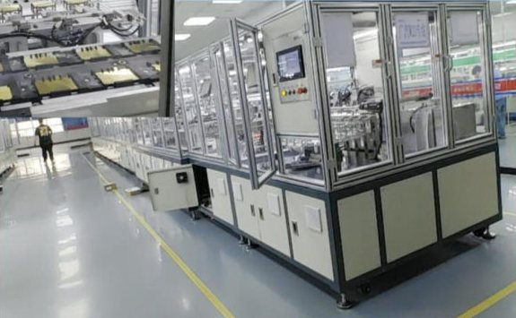
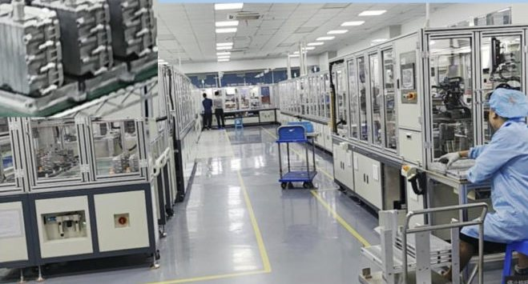
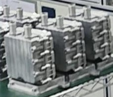
新能源汽车零部件
新能源汽车电池 PTC 水发热包：两段式组装检测线
- A 段将 PTC 元件与电极片压合成发热芯。
- B 段包括壳体密封、高低压座安装、IGBT 与 PCBA 安装、焊接、点胶与 AOI 检测、盖板密封、贴标，以及耐压与电阻测试。
- 各工位扫码，每件产品都有生产记录。
- 中段典型方案：约 25 米 × 6 米，由模组搬运机械手串联，含固化隧道炉、带扭矩与角度监控的自动锁螺丝、AOI 检测与自动贴标。
新能源与汽车
汽车暖风 PTC 发热芯：自动生产线（客户现场调试）
- 自动生产车用暖风波纹条发热芯。
- 配套的发热组件组装线由我们的工程师在客户现场完成调试。
- 两条线都在工位间追踪产品。
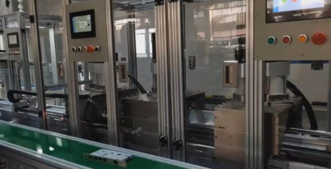
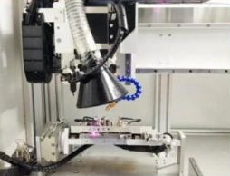
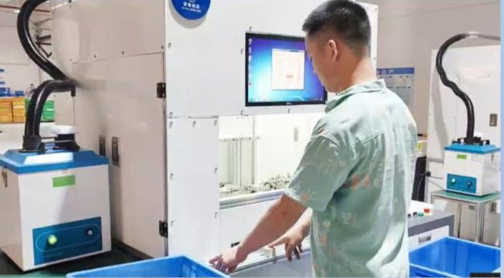
锁具与五金
智能锁锁体：激光焊接、组装与旋铆生产线
- 激光焊接工位完成锁体零件焊接，各工位配烟尘净化。
- 组装与旋铆工位由输送线串成整线。
- 操作工在工位上料，焊接与旋铆由设备完成。
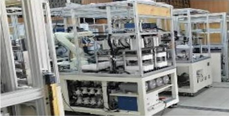
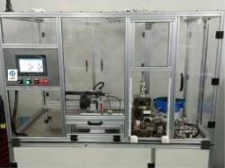
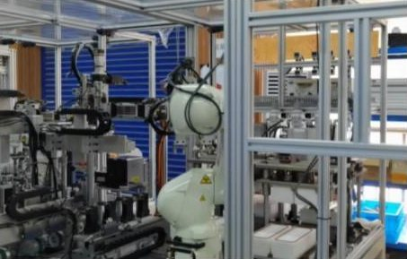
个护电器
电动牙刷：组装检测生产线
- 马达压轴、组装与功能测试在一条线上完成。
- 机器人工作站承担重复的转运与组装工序。
- 可配套刷头吸塑焊接包装设备。
化妆品包材
化妆品包材：口红推出组件组立与瓶盖烫金
- 振动盘供料，自动组立口红推出组件。
- 圆形泵盖与异形睫毛膏盖自动烫金。
- 配套移印机与转盘丝印机用于装饰印刷。
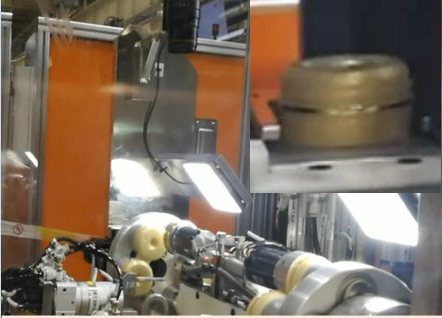
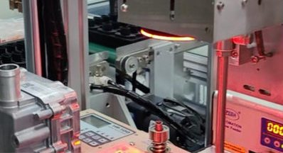
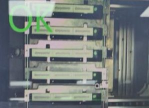
视觉检测
CCD 视觉检测的多场景应用
- 烫金瑕疵检测：褶皱、裂痕、发亮、发白。
- 视觉定位激光打标、组装与锁螺丝。
- 点胶漏胶、少胶、缺口检测；按颜色与形状分选。
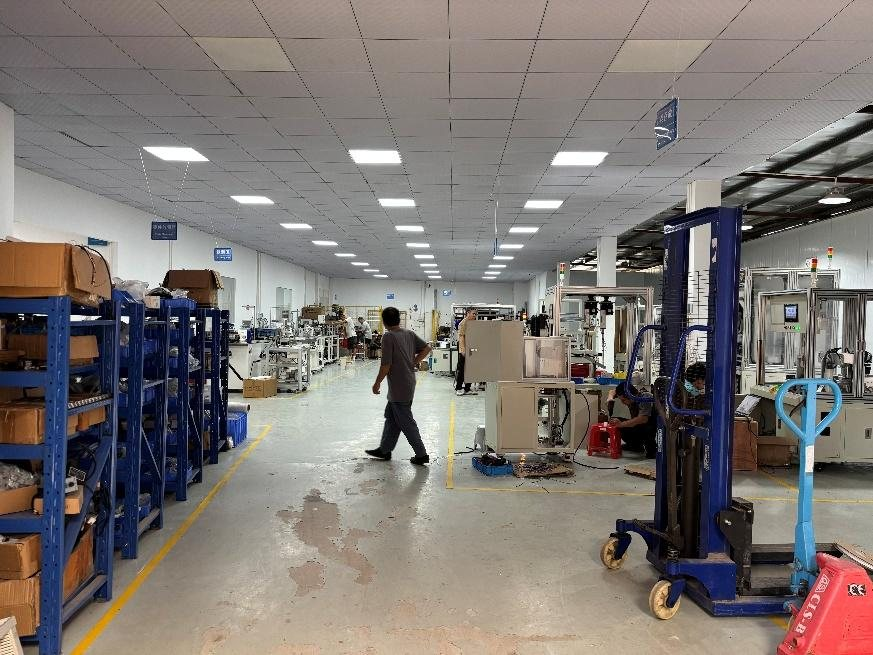
服装
服装生产线设备（越南）
- 为越南一家服装工厂设计并在广州完成预测试的生产线设备。
- 已发运并在客户工厂完成安装调试。
- 项目详情经客户同意后可应询提供。